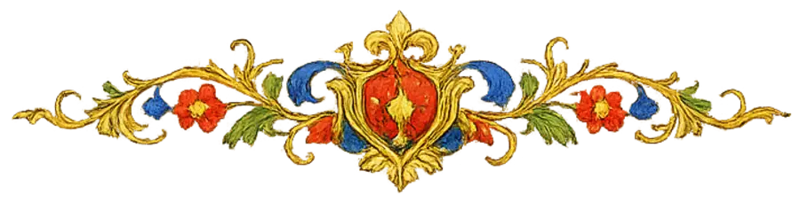

Quatro maneiras de abrir os ~2.650 cantos — o Graduale (≈460 Missas), o Antiphonale, o Kyriale e os hinos e antífonas — e duas maneiras de ler uma Missa aberta. Dados reais: a semana de 8 a 14 de novembro de 2026 segundo o calendário de 1962, partituras desenhadas pelo próprio motor do app.
1 · HojeEstou na Missa ou no Ofício e quero cantar o que se canta agora. Zero toques.
2 · PrepararSou cantor ou da schola: o que cantamos domingo e nas festas da semana? Olhar adiante, ensaiar.
3 · EncontrarSei o nome ou as palavras — “Puer natus”, “Ave Maria”. Quero aquele canto, e saber onde ele se canta.
4 · ExplorarQuero conhecer o tesouro: o Advento inteiro, todos os Intróitos, o modo VIII, os cantos de Nossa Senhora.
5 · VoltarEstou aprendendo um repertório; quero voltar aos cantos que guardei sem procurar.
Conceito AO dia
A biblioteca abre no dia, como o Neumz e os “propers” do Chant Tools: a data é o índice. O mesmo gesto da tela Hoje — deslizar o título da data — percorre o ano; a Missa e as Horas do dia se desdobram em seus cantos. Os livros ficam no rodapé, para quem quer o volume inteiro.
SERVE BEMHoje · PrepararSERVE MALEncontrar · Explorar (só pela busca)
9:41●●● ▮
‹CANTO GREGORIANO⌕
‹ deslize para mudar o dia ›
Domingo, 8 de novembro
S 2T 3Q 4Q 5S 6S 7D 8

Dominica XXIV et ultima post Pentecosten
II classe · verde
Missa
OrdinárioMissa XI Orbis factor›
Ofício
Laudesantífonas · hino · responsório›
Vésperasantífonas · hino · Magnificat›
☀Hoje
✝Rezar
⌕Buscar
❧Biblioteca
◯Você
A data é o título e o controle: deslizar troca o dia. Cada linha da Missa mostra a parte em vermelho, o incipit e o modo.
9:41●●● ▮
‹CANTO GREGORIANO⌕
Quarta, 11 de novembro
S. Martini Episcopi et Confessoris
III classe · branco · Commune Confessoris Pontificis
Missa
Nos livros
Graduale
≈460 Missas
Antiph.
Horas do ano
Kyriale
18 Missas
☀Hoje
✝Rezar
⌕Buscar
❧Biblioteca
◯Você
Três dias adiante: São Martinho. Os livros inteiros ficam como portas no fim do dia.
Conceito BO acervo
A biblioteca abre na busca e em portas curadas, como o Square Note: busca por incipit ou por qualquer palavra do texto; uma faixa “Hoje” no alto; depois os tempos do ano (blocos de cor das joias), as formas do canto com suas contagens, as ocasiões com arte. Cada resultado diz onde o canto se canta.
SERVE BEMEncontrar · Explorar · HojeSERVE MALPreparar (olhar a semana pede o dia)
9:41●●● ▮
Canto
⌕Incipit ou palavras do texto
♪
Hoje · domingo, 8 de novembro
Dominica XXIV post Pentecosten
Dicit Dominus · Liberasti nos · De profundis · De profundis · Amen dico vobis
Tempos
✠
Advento
✶
Natal
✠
Quaresma
Formas
Intróitos193
Graduais152
Aleluias213
Tratos53
Ofertórios153
Comunhões192
Antífonas1.264
Hinos123
Ocasiões
Nossa Senhora
Defuntos
☀Hoje
✝Rezar
⌕Buscar
❧Biblioteca
◯Você
Busca primeiro, depois portas: hoje, tempos, formas (com quantos cantos há em cada), ocasiões. Continua abaixo com Modos I–VIII e os Livros.
9:41●●● ▮
⌕ave mariaCancelar
Ofertórios · 2
Ave María, grátia plenaVIII
Imaculada Conceição
Ave María… et benedíctusVIII
IV Domingo do Advento · festas de Nossa Senhora
Aleluias · 1
Ave MaríaII
Festas de Nossa Senhora · S. Gabriel Arcanjo
Antífonas · 2
Ave María… allelújaI
Antiphonale · tempo pascal
Ave María… allel.I
Antiphonale
Hinos e orações · 2
Ave maris stellaI
Hinos e antífonas
Ave MaríaI
Hinos e antífonas · a oração cantada
☀Hoje
✝Rezar
⌕Buscar
❧Biblioteca
◯Você
A busca agrupa por forma e diz onde cada canto se canta — o que separa os dois ofertórios “Ave Maria”. Resultados reais do acervo.
Conceito CO livro
Cada livro é lido como um Liber Usualis: um sumário tipográfico com pontilhados até o incipit, e um índice de dedo na margem direita — como as abas de um missal impresso — para saltar de Advento a Pentecostes, de janeiro a dezembro, aos Comuns. Uma fita vermelha marca a Missa de hoje.
SERVE BEMExplorar · Preparar · Hoje (pela fita)SERVE MALEncontrar (pede a busca à parte)
9:41●●● ▮
‹LIVROS⌕
Graduale
Os cantos próprios da Missa, todo o ano · 1961
Hoje Dominica XXIV post Pentecosten›
Proprium de Tempore
Adventus
Nativitas Domini
ADVNATEPISEPTQUADPASSPASCPENTIANFEBMAR··DECCOM
☀Hoje
✝Rezar
⌕Buscar
❧Biblioteca
◯Você
Sumário como num livro impresso: Missa, pontilhado, incipit do Intróito. A fita “Hoje” no alto; o índice de dedo na margem.
9:41●●● ▮
‹GRADUALE⌕
Proprium de Tempore
Quadragesima
QUAD
Quaresma
ADVNATEPISEPTQUADPASSPASCPENTIANFEBMAR··DECCOM
☀Hoje
✝Rezar
⌕Buscar
❧Biblioteca
◯Você
O polegar arrasta pelo índice; um selo da cor do tempo diz onde se vai cair, como no Contatos do iPhone.
Conceito D · minha recomendaçãoA semana, a busca e os livros
Uma síntese: o alto da tela é a semana litúrgica — hoje e os próximos dias, cada um um bloco da cor do dia com seus incipits — que atende quem canta agora e quem prepara domingo. Logo abaixo a busca. Depois os livros, cada um abrindo no formato do Conceito C (sumário + índice de dedo). As portas do Conceito B (formas, modos, ocasiões) moram dentro da busca vazia, onde quem procura as encontra.
Tocar na busca, antes de digitar: os guardados e as portas de exploração (formas, modos, ocasiões) como links tipográficos, não caixas.
A Missa abertaPáginas ou uma folha só?
Vale para qualquer um dos conceitos. Hoje o Kyriale abre cada Missa como páginas que se deslizam (Kyrie → Gloria…). Para o Graduale há duas leituras: E1 mantém as páginas, com as abas nomeando a parte; E2 é uma folha contínua como a página de um missal, as partes em vermelho, com um índice fixo no alto que acompanha a rolagem. O botão ▶ é o lugar do toque (a reprodução vem depois).
9:41●●● ▮
‹Dominica XXIV post Pentecosten
IntróitoGradualAleluiaOfertórioComunhão
Intróito · modo VI
Dicit Dominus
Jer 29:11, 12, 14 · Graduale Romanum 1961
▶
☀Hoje
✝Rezar
⌕Buscar
❧Biblioteca
◯Você
E1 · páginas: um canto por tela, desliza para o próximo; as abas dizem a parte. É o que o Kyriale já faz.
9:41●●● ▮
‹Dominica XXIV post Pentecosten
INTRGRAD ALLOFFCOMM
Gradual · modo VII
Liberasti nos
▶
☀Hoje
✝Rezar
⌕Buscar
❧Biblioteca
◯Você
E2 · folha contínua: o fim do Intróito, um ornamento, o Gradual. O índice no alto marca a parte em leitura; tocar salta.